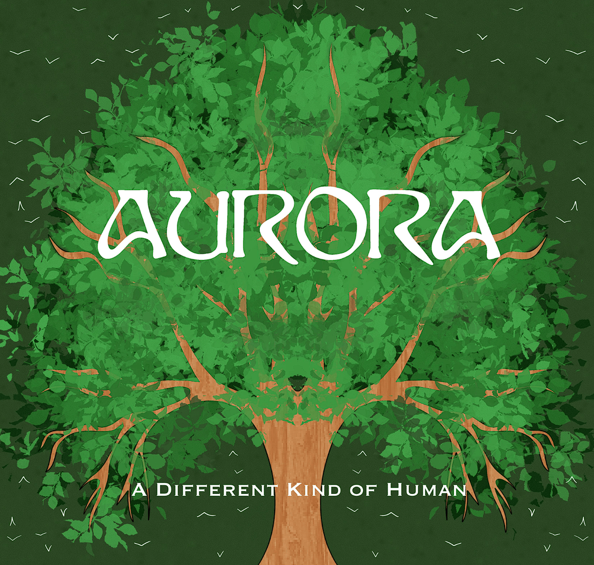
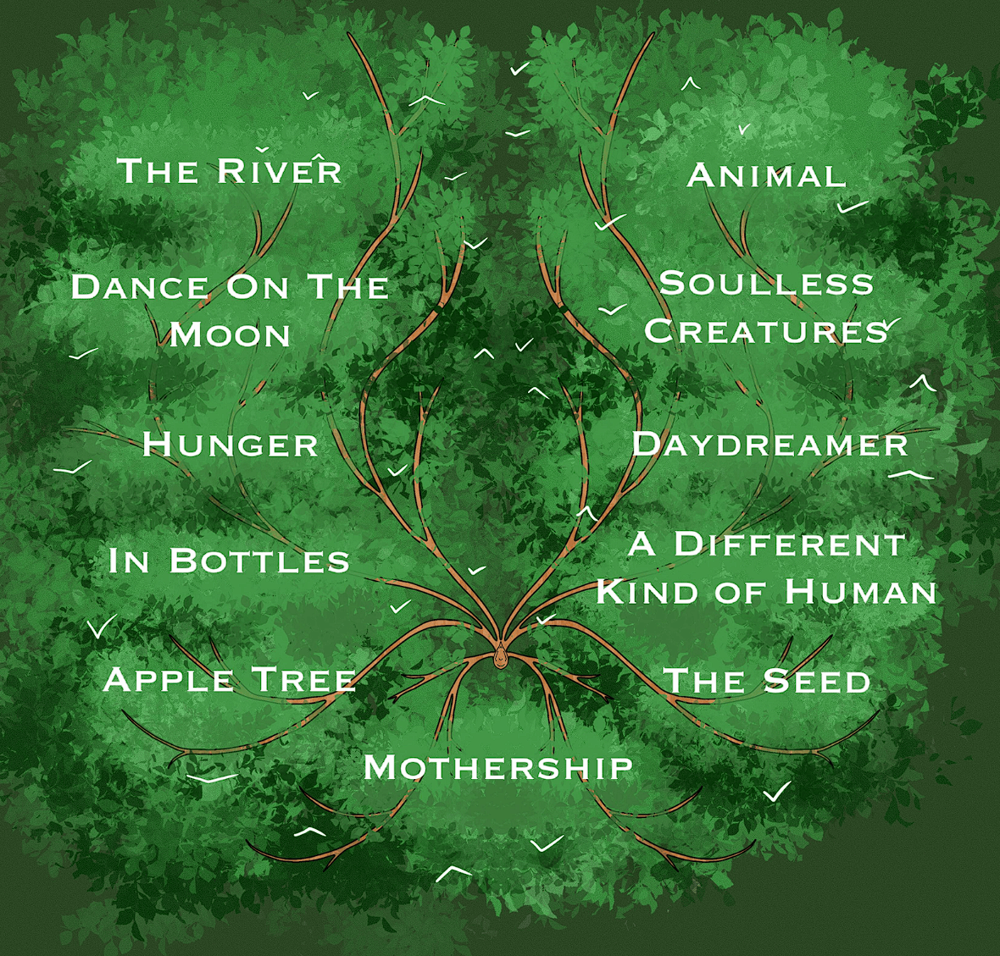
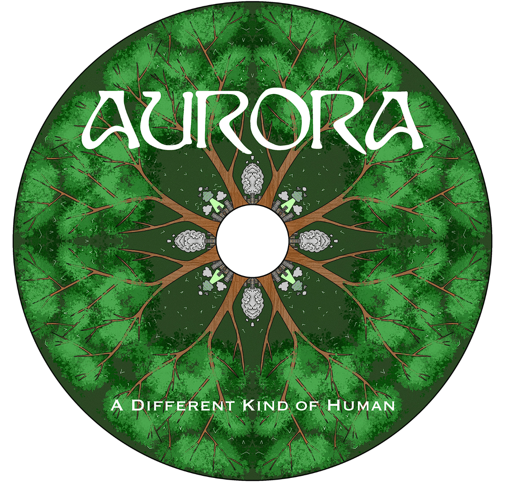

This is the front cover and back cover of an album for a CD case, or record case, and the front of a CD or record. These are inspired by Aurora's album, A Different Kind of Human, which echoes themes of nature and the harm human greed has caused. This album features topics, from self-acceptance, to a criticism of capitalism, to a call to action to become a different kind of human, an empathetic one.

